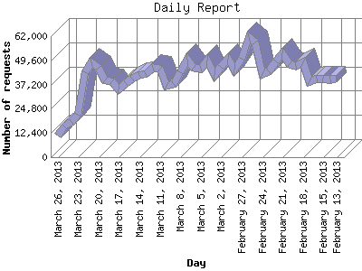

Analog 5.1
Analog 5.1 Report Magic 2.21
Report Magic 2.21The Daily Report identifies the activity for each day within the reporting period. Remember that one page hit can result in several server requests as the images for each page are loaded.

| Day | Number of requests | Number of page requests | |
|---|---|---|---|
| 1. | February 13, 2013 | 40,322 | 25,350 |
| 2. | February 14, 2013 | 39,976 | 26,137 |
| 3. | February 15, 2013 | 40,325 | 25,137 |
| 4. | February 16, 2013 | 40,321 | 26,374 |
| 5. | February 17, 2013 | 39,060 | 24,346 |
| 6. | February 18, 2013 | 48,788 | 25,116 |
| 7. | February 19, 2013 | 46,529 | 25,343 |
| 8. | February 20, 2013 | 47,587 | 26,205 |
| 9. | February 21, 2013 | 53,007 | 30,097 |
| 10. | February 22, 2013 | 49,000 | 29,461 |
| 11. | February 23, 2013 | 43,815 | 28,892 |
| 12. | February 24, 2013 | 42,571 | 30,573 |
| 13. | February 25, 2013 | 58,601 | 33,036 |
| 14. | February 26, 2013 | 61,423 | 34,174 |
| 15. | February 27, 2013 | 50,483 | 29,918 |
| 16. | February 28, 2013 | 44,953 | 24,732 |
| 17. | March 1, 2013 | 50,431 | 27,098 |
| 18. | March 2, 2013 | 46,365 | 28,700 |
| 19. | March 3, 2013 | 42,158 | 26,006 |
| 20. | March 4, 2013 | 49,362 | 26,175 |
| 21. | March 5, 2013 | 45,523 | 27,256 |
| 22. | March 6, 2013 | 45,601 | 27,282 |
| 23. | March 7, 2013 | 50,018 | 27,499 |
| 24. | March 8, 2013 | 43,575 | 23,207 |
| 25. | March 9, 2013 | 37,383 | 21,351 |
| 26. | March 10, 2013 | 36,565 | 20,496 |
| 27. | March 11, 2013 | 45,277 | 20,293 |
| 28. | March 12, 2013 | 45,875 | 21,451 |
| 29. | March 13, 2013 | 42,777 | 21,172 |
| 30. | March 14, 2013 | 42,110 | 20,043 |
| 31. | March 15, 2013 | 40,156 | 20,879 |
| 32. | March 16, 2013 | 38,097 | 20,523 |
| 33. | March 17, 2013 | 34,859 | 16,942 |
| 34. | March 18, 2013 | 38,721 | 16,394 |
| 35. | March 19, 2013 | 39,120 | 18,499 |
| 36. | March 20, 2013 | 45,990 | 24,487 |
| 37. | March 21, 2013 | 48,720 | 22,749 |
| 38. | March 22, 2013 | 43,721 | 24,475 |
| 39. | March 23, 2013 | 21,718 | 11,968 |
| 40. | March 24, 2013 | 17,896 | 11,608 |
| 41. | March 25, 2013 | 15,601 | 8,555 |
| 42. | March 26, 2013 | 11,264 | 4,360 |
Most active day May 3, 2012 : 86,339 pages sent. 61,423 requests handled.
Daily average: 23,437 pages sent. 42,039 requests handled.
This report was generated on March 26, 2013 00:52.
Report time frame November 8, 2011 00:00 to March 26, 2013 07:35.
| Web statistics report produced by: | |
| Analog 5.1 | Report Magic 2.21 |